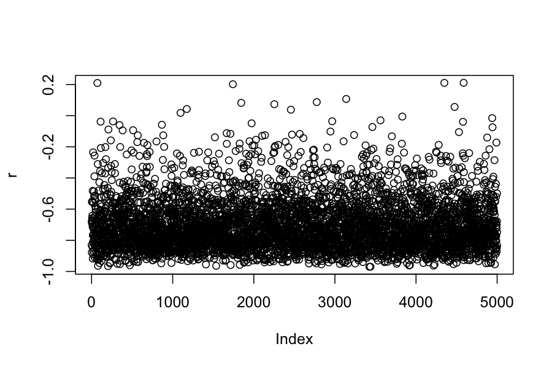
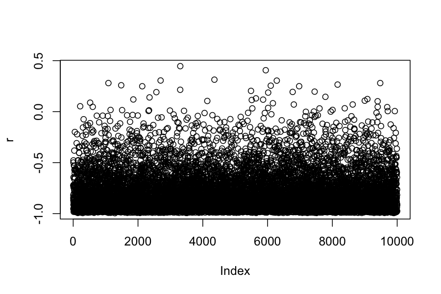
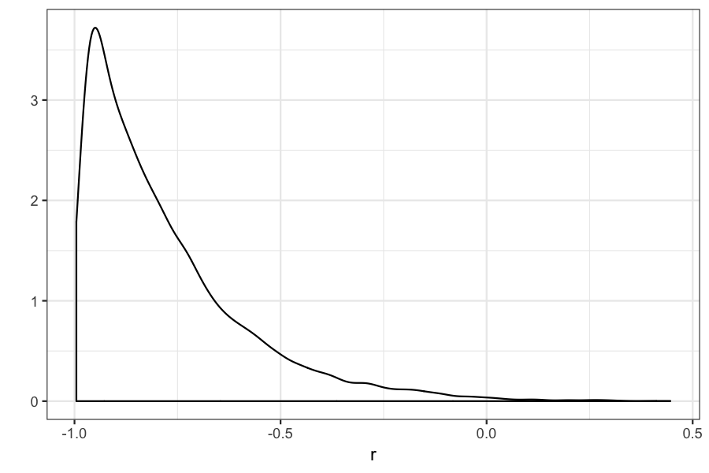
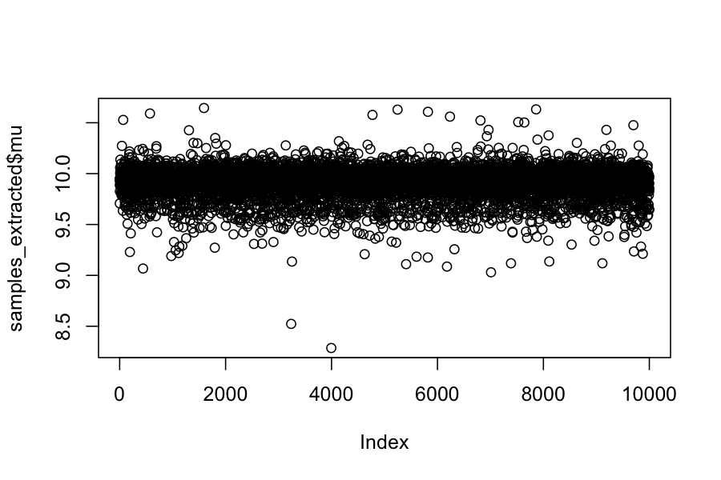
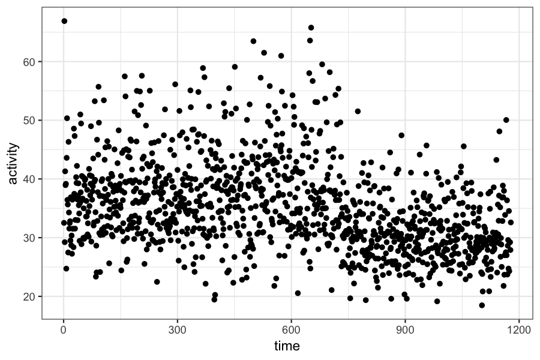
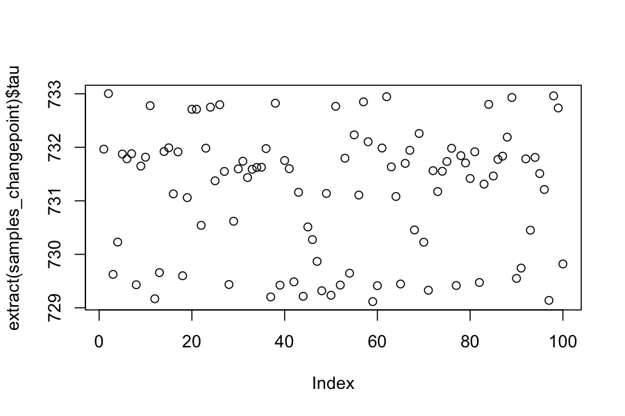
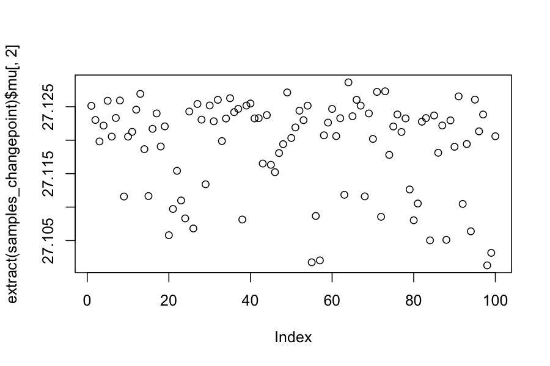
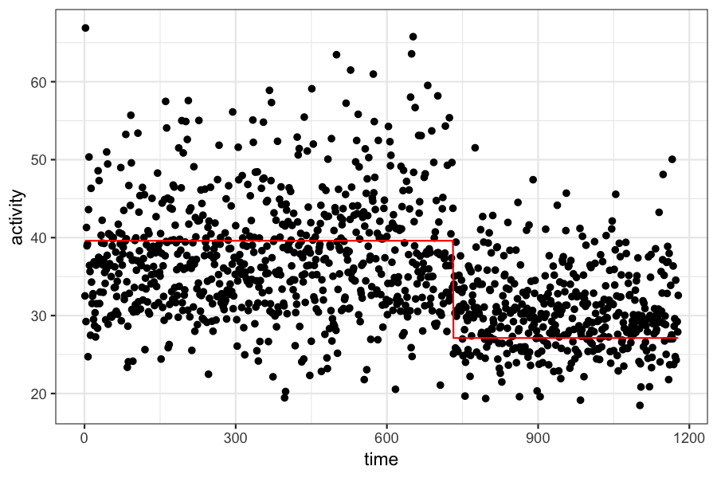

Applications
Today:
Reading:
- Examples are all taken from "Bayesian Cognitive Modeling: A Practical Course" by Lee and Wagenmakers, and the implementations in stan are taken from the
rstan package
The Bayesian Setup
Given:
Data: \(x_1, \ldots, x_n\)
A set of parameters \(\theta\)
A model \(P(x_1,\ldots, x_n\mid \theta)\) giving the likelihood of the data given the parameters
A prior distribution over the parameters \(\theta\), \(P(\theta)\)
The Bayesian Goal
In Bayesian inference, we want to compute the posterior distribution over the parameters: \[
P(\theta \mid x_1,\ldots, x_n) = \frac{P(x_1, \ldots, x_n \mid \theta)P(\theta)}{P(x_1,\ldots, x_n)}
\]
Notes:
Sometimes there is an analytic solution.
If there is no analytic solution, we try to sample from \(P(\theta \mid x_1,\ldots, x_n)\) instead.
Most of the time it is hard to compute \(P(x_1, \ldots, x_n)\).
To use Metropolis-Hastings to sample from \(P(\theta \mid x_1,\ldots, x_n)\), we only need to be able to compute \(P(x_1, \ldots, x_n \mid \theta)P(\theta)\).
Example 1: Estimating a correlation
(Example 5.2 in the book). We have two variables measured on \(n\) cases, and we would like to estimate the correlation between them.
For this problem, we have
Data: \(x_i \in \mathbb R^2\), \(i = 1,\ldots, n\)
Model: \[
P(x_i \mid \mu_1, \mu_2, \sigma_1, \sigma_2, r) = \mathcal N_2 \left( \begin{pmatrix}\mu_1 \\ \mu_2 \end{pmatrix}, \begin{pmatrix} \sigma_1^2 & r \sigma_1 \sigma_2 \\ r \sigma_1 \sigma_2 & \sigma_2^2 \end{pmatrix} \right)
\]
Parameters: \(\mu_1, \mu_2, \sigma_1, \sigma_2, r\)
Prior on the parameters: \[
\begin{align*}
P(\mu_1) &= \mathcal N(0, 1000)\\
P(\mu_2) &= \mathcal N(0, 1000)\\
P(\sigma_1) &= \text{InvSqrtGamma}(.001, .001)\\
P(\sigma_2) &= \text{InvSqrtGamma}(.001, .001)\\
P(r) &= \text{Uniform}(-1,1)
\end{align*}
\]
Posterior distribution on the parameters: \[
P(\mu_1, \mu_2,\sigma_1, \sigma_2, r \mid x_1, \ldots, x_n) \propto \prod_{i=1}^n P(x_i \mid \mu_1, \mu_2, \sigma_1, \sigma_2, r) P(\mu_1) P(\mu_2) P(\sigma_1) P(\sigma_2) P(r)
\]
Everything on the right-hand side is easily computable, and that is all we need for MCMC.
What would Metropolis-Hastings look like here?
Start with some initial values of the parameters: \(\mu_1^{(0)}, \mu_2^{(0)}, \sigma_1^{(0)}, \sigma_2^{(0)}, r^{(0)}\)
For i in 1 to as many iterations as desired:
Propose a new set of parameters \(\mu_1^{(i)}, \mu_2^{(i)}, \sigma_1^{(i)}, \sigma_2^{(i)}, r^{(i)}\) from a proposal distribution around \(\mu_1^{(i-1)}, \mu_2^{(i-1)}, \sigma_1^{(i-1)}, \sigma_2^{(i-1)}, r^{(i-1)}\).
Compute the ratio \[
\begin{align*}
a = &\frac{P(\mu_1^{(i)}, \mu_2^{(i)}, \sigma_1^{(i)}, \sigma_2^{(i)}, r^{(i)} \mid x_1,\ldots, x_n)}{P(\mu_1^{(i)}, \mu_2^{(i)}, \sigma_1^{(i)}, \sigma_2^{(i)}, r^{(i)} \mid x_1,\ldots, x_n )} \\
\quad &= \frac{ \prod_{i=1}^n P(x_i \mid \mu_1^{(i)}, \mu_2^{(i)}, \sigma_1^{(i)}, \sigma_2^{(i)}, r^{(i)}) P(\mu_1^{(i)}) P(\mu_2^{(i)}) P(\sigma_1^{(i)}) P(\sigma_2^{(i)}) P(r^{(i)})}{ \prod_{i=1}^n P(x_i \mid \mu_1^{(i-1)}, \mu_2^{(i-1)}, \sigma_1^{(i-1)}, \sigma_2^{(i-1)}, r^{(i-1)}) P(\mu_1^{(i-1)}) P(\mu_2^{(i-1)}) P(\sigma_1^{(i-1)}) P(\sigma_2^{(i-1)}) P(r^{(i-1)})}
\end{align*}
\]
If \(a > 1\), move to the proposed set of parameters, otherwise move to the proposed set of parameters with probability \(a\) and stay at the current set with probability \(1 - a\)
model_correlation <- "
// Pearson Correlation
data {
int<lower=0> n;
vector[2] x[n];
}
parameters {
vector[2] mu;
vector<lower=0>[2] lambda;
real<lower=-1,upper=1> r;
}
transformed parameters {
vector<lower=0>[2] sigma;
cov_matrix[2] T;
// Reparameterization
sigma[1] = inv_sqrt(lambda[1]);
sigma[2] = inv_sqrt(lambda[2]);
T[1,1] = square(sigma[1]);
T[1,2] = r * sigma[1] * sigma[2];
T[2,1] = r * sigma[1] * sigma[2];
T[2,2] = square(sigma[2]);
}
model {
// Priors
mu ~ normal(0, inv_sqrt(.001));
lambda ~ gamma(.001, .001);
// Data
x ~ multi_normal(mu, T);
}"
# The dataset:
x <- matrix(c( .8, 102,
1.0, 98,
.5, 100,
.9, 105,
.7, 103,
.4, 110,
1.2, 99,
1.4, 87,
.6, 113,
1.1, 89,
1.3, 93), nrow=11, ncol=2, byrow=T)
n <- nrow(x) # number of people/units measured
data <- list(x=x, n=n) # to be passed on to Stan
myinits <- list(
list(r=0, mu=c(0, 0), lambda=c(1, 1)))
# parameters to be monitored:
parameters <- c("r", "mu", "sigma")
samples <- stan(model_code=model_correlation,
data=data,
init=myinits,
pars=parameters,
iter=10000,
chains=1,
thin=1)
##
## SAMPLING FOR MODEL '31aefbc6f9701279b306e349956c379c' NOW (CHAIN 1).
## Chain 1:
## Chain 1: Gradient evaluation took 9.8e-05 seconds
## Chain 1: 1000 transitions using 10 leapfrog steps per transition would take 0.98 seconds.
## Chain 1: Adjust your expectations accordingly!
## Chain 1:
## Chain 1:
## Chain 1: Iteration: 1 / 10000 [ 0%] (Warmup)
## Chain 1: Iteration: 1000 / 10000 [ 10%] (Warmup)
## Chain 1: Iteration: 2000 / 10000 [ 20%] (Warmup)
## Chain 1: Iteration: 3000 / 10000 [ 30%] (Warmup)
## Chain 1: Iteration: 4000 / 10000 [ 40%] (Warmup)
## Chain 1: Iteration: 5000 / 10000 [ 50%] (Warmup)
## Chain 1: Iteration: 5001 / 10000 [ 50%] (Sampling)
## Chain 1: Iteration: 6000 / 10000 [ 60%] (Sampling)
## Chain 1: Iteration: 7000 / 10000 [ 70%] (Sampling)
## Chain 1: Iteration: 8000 / 10000 [ 80%] (Sampling)
## Chain 1: Iteration: 9000 / 10000 [ 90%] (Sampling)
## Chain 1: Iteration: 10000 / 10000 [100%] (Sampling)
## Chain 1:
## Chain 1: Elapsed Time: 1.90805 seconds (Warm-up)
## Chain 1: 1.98601 seconds (Sampling)
## Chain 1: 3.89406 seconds (Total)
## Chain 1:
r <- extract(samples)$r
plot(r)

qplot(r, geom = "density")
## 95% credible interval
quantile(r, c(.025, .975))
## 2.5% 97.5%
## -0.9196590 -0.2799391
## posterior mean
mean(r)
## [1] -0.7021456
#Frequentist point-estimate of r:
(freq.r <- cor(x[,1],x[,2]))
## [1] -0.8109671
Estimating a correlation with measurement error
(Example 5.2 in the book)
Problem: Suppose that our data come from a study of the relationship between "response time on a semantic verification task" and IQ.
The researchers want to estimate the correlation between response time and IQ.
The problem is that the IQ measurement has some uncertainty associated with it, and so the previous mode we used to estimate the correlation is incorrect.
For the model with uncertainy in measurements, we again have two variables (response time and IQ) measured on \(n\) cases, and we would like to estimate the correlation between them.
Data: \(x_i \in \mathbb R^2\), \(i = 1,\ldots, n\)
Model: \[
\begin{align*}
P(y_i \mid \mu_1, \mu_2, \sigma_1, \sigma_2, r) &= \mathcal N_2 \left( \begin{pmatrix}\mu_1 \\ \mu_2 \end{pmatrix}, \begin{pmatrix} \sigma_1^2 & r \sigma_1 \sigma_2 \\ r \sigma_1 \sigma_2 & \sigma_2^2 \end{pmatrix} \right)\\
P(x_{i} \mid y_{i}) &= \mathcal N_2\left(y_{i}, \begin{pmatrix} \sigma^e_1 & 0 \\ 0 & \sigma_2^e \end{pmatrix} \right)
\end{align*}
\]
Parameters: \(\mu_1, \mu_2, \sigma_1, \sigma_2, r\) (we assume that the measurement errors, \(\sigma^e_1, \sigma^e_2\), are known)
Prior on the parameters: \[
\begin{align*}
P(\mu_1) &= \mathcal N(0, 1000)\\
P(\mu_2) &= \mathcal N(0, 1000)\\
P(\sigma_1) &= \text{InvSqrtGamma}(.001, .001)\\
P(\sigma_2) &= \text{InvSqrtGamma}(.001, .001)\\
P(r) &= \text{Uniform}(-1,1)
\end{align*}
\]
Posterior distribution:
\[
P(x_1,\ldots, x_n \mid \mu_1, \mu_2, \sigma_1, \sigma_2, r) \propto \prod_{i=1}^n P(x_i \mid y_i) P(y_i \mid \mu_1, \mu_2, \sigma_1, \sigma_2, r) P(\mu_1)P(\mu_2)P(\sigma_1)P(\sigma_2)P(r)
\]
Again, everything is easily computable, and we can use MCMC to obtain samples from the posterior distribution.
model <- "
// Pearson Correlation With Uncertainty in Measurement
data {
int<lower=0> n;
vector[2] x[n];
vector[2] sigmaerror;
}
parameters {
vector[2] mu;
vector<lower=0>[2] lambda;
real<lower=-1,upper=1> r;
vector[2] y[n];
}
transformed parameters {
vector<lower=0>[2] sigma;
cov_matrix[2] T;
// Reparameterization
sigma[1] = inv_sqrt(lambda[1]);
sigma[2] = inv_sqrt(lambda[2]);
T[1,1] = square(sigma[1]);
T[1,2] = r * sigma[1] * sigma[2];
T[2,1] = r * sigma[1] * sigma[2];
T[2,2] = square(sigma[2]);
}
model {
// Priors
mu ~ normal(0, inv_sqrt(.001));
lambda ~ gamma(.001, .001);
// Data
y ~ multi_normal(mu, T);
for (i in 1:n)
x[i] ~ normal(y[i], sigmaerror);
}"
x <- matrix(c( .8, 102,
1.0, 98,
.5, 100,
.9, 105,
.7, 103,
.4, 110,
1.2, 99,
1.4, 87,
.6, 113,
1.1, 89,
1.3, 93), nrow=11, ncol=2, byrow=T)
n <- nrow(x) # number of people/units measured
# precision of measurement:
sigmaerror = c(.03, 5)
data <- list(x=x, n=n, sigmaerror=sigmaerror) # to be passed on to Stan
myinits <- list(
list(r=0, mu=c(0, 0), lambda=c(1, 1), y=matrix(c(rep(1, n), rep(100, n)), n, 2)))
# parameters to be monitored:
parameters <- c("r", "mu", "sigma")
samples <- stan(model_code=model,
data=data,
init=myinits,
pars=parameters,
iter=20000,
chains=1,
thin=1)
##
## SAMPLING FOR MODEL 'ca98a184003e9d2907fcd31a07a7d500' NOW (CHAIN 1).
## Chain 1:
## Chain 1: Gradient evaluation took 8.9e-05 seconds
## Chain 1: 1000 transitions using 10 leapfrog steps per transition would take 0.89 seconds.
## Chain 1: Adjust your expectations accordingly!
## Chain 1:
## Chain 1:
## Chain 1: Iteration: 1 / 20000 [ 0%] (Warmup)
## Chain 1: Iteration: 2000 / 20000 [ 10%] (Warmup)
## Chain 1: Iteration: 4000 / 20000 [ 20%] (Warmup)
## Chain 1: Iteration: 6000 / 20000 [ 30%] (Warmup)
## Chain 1: Iteration: 8000 / 20000 [ 40%] (Warmup)
## Chain 1: Iteration: 10000 / 20000 [ 50%] (Warmup)
## Chain 1: Iteration: 10001 / 20000 [ 50%] (Sampling)
## Chain 1: Iteration: 12000 / 20000 [ 60%] (Sampling)
## Chain 1: Iteration: 14000 / 20000 [ 70%] (Sampling)
## Chain 1: Iteration: 16000 / 20000 [ 80%] (Sampling)
## Chain 1: Iteration: 18000 / 20000 [ 90%] (Sampling)
## Chain 1: Iteration: 20000 / 20000 [100%] (Sampling)
## Chain 1:
## Chain 1: Elapsed Time: 12.5317 seconds (Warm-up)
## Chain 1: 8.41942 seconds (Sampling)
## Chain 1: 20.9511 seconds (Total)
## Chain 1:
r = extract(samples)$r
plot(r)

## posterior density for r
qplot(r, geom = "density")

## 95% credible interval
quantile(r, c(.025, .975))
## 2.5% 97.5%
## -0.9845225 -0.2478574
## posterior mean
mean(r)
## [1] -0.7832858
#Frequentist point-estimate of r:
(freq.r <- cor(x[,1],x[,2]))
## [1] -0.8109671
Example 3: Seven scientists
(Example 4.2 in the book). Seven scientists with dramatically different capabilities run an experiment to measure a certain quantity.
The get the results: -27.020, 3.570, 8.191, 9.898, 9.603, 9.945, 10.056
We would like to combine their results to get an estimate of the true value of the quantity they were trying to measure.
We can model this as:
The result each of the scientists obtained comes from a normal distribution
All seven distributions have the same mean
All seven distributions have different variances
Listing everything out:
Data: \(x_i \in \mathbb R^1\), \(i = 1,\ldots, 7\)
Likelihood: \[
P(x_i \mid \mu, \lambda_i ) = \mathcal N(\mu, \lambda_i^{-1})
\]
Parameters: \(\mu, \lambda_1,\ldots, \lambda_7\)
Prior: \[
\begin{align*}
P(\mu) &= \mathcal N(0, 1000) \\
P(\lambda_i) &= \text{Gamma}(.001, .001)
\end{align*}
\]
Posterior: \[
P(\mu, \lambda_1,\ldots, \lambda_7 \mid x_1,\ldots, x_7) \propto \prod_{i=1}^7 P(x_i \mid \mu, \lambda_1,\ldots, \lambda_7) P(\mu) \prod_{i=1}^7 P(\lambda_i)
\]
Again, everything on the right can be evaluated easily, and we can use MCMC to sample from the distribution.
model_seven_scientists = "
// The Seven Scientists
data {
int<lower=1> n;
vector[n] x;
}
parameters {
real mu;
vector<lower=0>[n] lambda;
}
transformed parameters {
vector[n] sigma;
for (i in 1:n)
sigma[i] = inv_sqrt(lambda[i]);
}
model {
// Priors
mu ~ normal(0, sqrt(1000));
lambda ~ gamma(.001, .001);
// Data Come From Gaussians With Common Mean But Different Precisions
x ~ normal(mu, sigma);
}"
x <- c(-27.020, 3.570, 8.191, 9.898, 9.603, 9.945, 10.056)
n <- length(x)
data <- list(x=x, n=n) # to be passed on to Stan
myinits <- list(
list(mu=0, lambda=rep(1,n)))
# parameters to be monitored:
parameters <- c("mu", "sigma")
samples_seven_scientists <- stan(model_code=model_seven_scientists,
data=data,
init=myinits,
pars=parameters,
iter=20000,
chains=1,
thin=1)
##
## SAMPLING FOR MODEL '0ad4c94821220e5bc1c79495c2929f20' NOW (CHAIN 1).
## Chain 1:
## Chain 1: Gradient evaluation took 1.8e-05 seconds
## Chain 1: 1000 transitions using 10 leapfrog steps per transition would take 0.18 seconds.
## Chain 1: Adjust your expectations accordingly!
## Chain 1:
## Chain 1:
## Chain 1: Iteration: 1 / 20000 [ 0%] (Warmup)
## Chain 1: Iteration: 2000 / 20000 [ 10%] (Warmup)
## Chain 1: Iteration: 4000 / 20000 [ 20%] (Warmup)
## Chain 1: Iteration: 6000 / 20000 [ 30%] (Warmup)
## Chain 1: Iteration: 8000 / 20000 [ 40%] (Warmup)
## Chain 1: Iteration: 10000 / 20000 [ 50%] (Warmup)
## Chain 1: Iteration: 10001 / 20000 [ 50%] (Sampling)
## Chain 1: Iteration: 12000 / 20000 [ 60%] (Sampling)
## Chain 1: Iteration: 14000 / 20000 [ 70%] (Sampling)
## Chain 1: Iteration: 16000 / 20000 [ 80%] (Sampling)
## Chain 1: Iteration: 18000 / 20000 [ 90%] (Sampling)
## Chain 1: Iteration: 20000 / 20000 [100%] (Sampling)
## Chain 1:
## Chain 1: Elapsed Time: 0.860444 seconds (Warm-up)
## Chain 1: 0.910903 seconds (Sampling)
## Chain 1: 1.77135 seconds (Total)
## Chain 1:
samples_extracted = extract(samples_seven_scientists)
## show the chain
plot(samples_extracted$mu)

## posterior mean of mu
mean(samples_extracted$mu)
## [1] 9.91404
## frequentist mean of mu
mean(x)
## [1] 3.463286
Example 4: Changepoint detection
(Example 5.4 in the book)
We have data on frontal lobe activity in a study of adults with ADHD.
In the experiment, we expect to see a "changepoint" in the measure of frontal lobe activity. The mean activity level will be different before and after the changepoint, and we want to estimate both the time of the change and the mean activity level before and after.
c = scan("changepointdata.txt")
ggplot(data.frame(activity = c, time = 1:length(c))) + geom_point(aes(x = time, y = activity))

Listing everything out:
Data: \(x_i \in \mathbb R\), \(i = 1,\ldots, n\)
Likelihood: \[
P(x_i \mid \mu_1, \mu_2, \tau, \lambda ) = \begin{cases}
\mathcal N(\mu_1, \lambda^{-1}) & i \le \tau \\
\mathcal N(\mu_2, \lambda^{-1}) & i > \tau
\end{cases}
\]
Parameters: \(\mu_1, \mu_2, \tau, \lambda\)
Prior: \[
\begin{align*}
P(\mu_1) &= \mathcal N(0, 1000) \\
P(\mu_2) &= \mathcal N(0, 1000) \\
P(\lambda) &= \text{Gamma}(.001, .001)\\
P(\tau) &= \text{Uniform}(0, n)
\end{align*}
\]
Posterior: \[
P(\mu_1, \mu_2, \lambda, \tau \mid x_1,\ldots, x_n) \propto \prod_{i=1}^n P(x_i \mid \mu_1, \mu_2 \lambda, \tau) P(\mu_1) P(\mu_2) P(\lambda) P(\tau)
\]
Again, everything on the right can be evaluated easily, and we can use MCMC to sample from the distribution.
model_changepoint <- "
// Change Detection
data {
int n;
vector[n] t;
vector[n] c;
}
parameters {
vector[2] mu;
real<lower=0> lambda;
real<lower=0,upper=n> tau;
}
transformed parameters {
real<lower=0> sigma;
sigma <- inv_sqrt(lambda);
}
model {
// Group Means
mu ~ normal(0, inv_sqrt(.001));
// Common Precision
lambda ~ gamma(.001, .001);
// Which Side is Time of Change Point?
// Data Come From A Gaussian
for (i in 1:n) {
if ((t[i] - tau) < 0.0)
c[i] ~ normal(mu[1], sigma);
else
c[i] ~ normal(mu[2], sigma);
}
}"
c <- scan("changepointdata.txt")
n <- length(c)
t <- 1:n
data <- list(c=c, n=n, t=t) # to be passed on to Stan
myinits <- list(
list(mu=c(1, 1), lambda=1, tau=n / 2))
# parameters to be monitored:
parameters <- c("mu", "sigma", "tau")
samples_changepoint <- stan(model_code=model_changepoint,
data=data,
init=myinits,
pars=parameters,
iter=250,
chains=1,
thin=1,
warmup = 150,
seed = 1)
## DIAGNOSTIC(S) FROM PARSER:
## Info (non-fatal): assignment operator <- deprecated in the Stan language; use = instead.
##
##
## SAMPLING FOR MODEL '6be547ad16619cfe59f852b122ee76ef' NOW (CHAIN 1).
## Chain 1:
## Chain 1: Gradient evaluation took 0.000143 seconds
## Chain 1: 1000 transitions using 10 leapfrog steps per transition would take 1.43 seconds.
## Chain 1: Adjust your expectations accordingly!
## Chain 1:
## Chain 1:
## Chain 1: Iteration: 1 / 250 [ 0%] (Warmup)
## Chain 1: Iteration: 25 / 250 [ 10%] (Warmup)
## Chain 1: Iteration: 50 / 250 [ 20%] (Warmup)
## Chain 1: Iteration: 75 / 250 [ 30%] (Warmup)
## Chain 1: Iteration: 100 / 250 [ 40%] (Warmup)
## Chain 1: Iteration: 125 / 250 [ 50%] (Warmup)
## Chain 1: Iteration: 150 / 250 [ 60%] (Warmup)
## Chain 1: Iteration: 151 / 250 [ 60%] (Sampling)
## Chain 1: Iteration: 175 / 250 [ 70%] (Sampling)
## Chain 1: Iteration: 200 / 250 [ 80%] (Sampling)
## Chain 1: Iteration: 225 / 250 [ 90%] (Sampling)
## Chain 1: Iteration: 250 / 250 [100%] (Sampling)
## Chain 1:
## Chain 1: Elapsed Time: 13.0408 seconds (Warm-up)
## Chain 1: 10.3236 seconds (Sampling)
## Chain 1: 23.3645 seconds (Total)
## Chain 1:
# Now the values for the monitored parameters are in the "samples" object,
# ready for inspection.
plot(extract(samples_changepoint)$tau)

plot(extract(samples_changepoint)$mu[,1])
plot(extract(samples_changepoint)$mu[,2])

(mean.tau <- mean(extract(samples_changepoint)$tau))
## [1] 731.1781
(mean.mu1 <- mean(extract(samples_changepoint)$mu[,1]))
## [1] 39.5996
(mean.mu2 <- mean(extract(samples_changepoint)$mu[,2]))
## [1] 27.11919
time_data = data.frame(activity = c, time = 1:length(c))
time_data$activity_fitted = ifelse(time_data$time <= mean.tau, mean.mu1, mean.mu2)
ggplot(time_data) + geom_point(aes(x = time, y = activity)) +
geom_line(aes(x = time, y = activity_fitted), color = "red")

Summing up
Bayesian modeling is very flexible
The MCMC methods we've looked at allow us to sample easily from pretty the posterior distribution in pretty much any Bayesian model we can write down
The samples from the posterior give us estimates of parameters and their uncertainties.